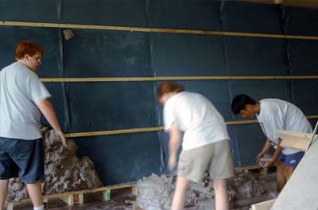
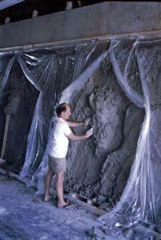

|
Step 1
The plywood is painted so it will not absorb water from the
clay. It is constructed at a six degree slant or greater,
so clay does not fall forward when working on the surface.
The size of the easel must be 13.6% larger than the finsihed
size to allow for the shrinkage of the clay from the wet stage
to installation. |
|
Step 2
Lath or 1"x2" strips of wood screwed
every two feet over the burlap which is stapled to the plywood.
It is sprayed with water to help the clay stick to the texture
of the cloth and wood. The burlap keeps the clay from sliding
and the wood strips hold the clay on the easel. |
|  |
Step 3
Clay is applied aggressively to the easel,
so it makes contact with the burlap and wood strips.
|
|
Step 4
60 feet of clay to groom ready for sculpting. |
|
Step 5
Clay is covered with plastic to maintain
moisture. |
|
Step 6
Open area to work, balance stays covered
to maintain moisture. This is a section of the Menasha City
Hall mural. |
|  |
Step 7
Sculpting in open area. This is a section
of the Wichita Mountain Wildlife Refuge mural. |
 |
Step 8
Another section of the Wichita Mountain Wildlife
Refuge mural, note the 2" x 6" support for the nose
of the elk. |
 |
Step 9
This image was taken after seven days of
sculpting. Client viewed later and recommended some changes.
The top four feet were added after is was cut down, hollowed
out and resculpted on a receiving easel. |
|
Step 10
This photo was shot on the sixth day. The
seventh day the mural was cut on contour, each piece was removed
from the easel, numbered, and laid in order on the floor.
The easel was taken down from the wall and laid on the floor,
for the mural to be resculpted on. |
|
Step 11
Cutting and removing pieces from the easel.
The clay sections are numbered on their right side. Each piece
is inventoried on a clear plastic sheet over the original
drawing with the number that was scribed on the right side. |
|
Step 12
Each piece was taken to a table placed face
down on foam to be hollowed out. |
|
Step 13
After each piece was hollowed out it is
returned to its original location on the rebuilt concave easel,
which is now located on the floor. The concave easel is built
to match installation wall. |
|
Step 14
Hollowed mural resculpted on unaltered easel.
Note the boxes in the background that hold the Wichita Mountain
Wildlife Refuge mural ready for installation. |
|
Step 15
For the Sportsman's Park mural a form was
used to create a 90 degree dove tail corner. Clay was added
to alternating pieces to create an interlocking corner. |
|
Step 16
Each piece is numbered on the top edge,
and printed on a photo showing its location in the mural.
After each piece is numbered and cataloged it is taken to
the kiln and readied for firing. |
|
Step 17
The kiln is fired to 2250 degrees Fahrenheit. |
|
Step 18
Pieces are unloaded from kiln, organized,
and returned to the studio floor. |
|
Step 19
The mural is boxed in sequence for installation. |
|
Step 20
The pieces are boxed, and protected by strips
and columns of cardboard. |
|
Step 21
The numbers of the pieces are written on
the box as well as in a note pad, so if a piece is needed
in advance, we know where to look. |
|
Step 22
The boxes are placed in order in the truck
so the first pieces of the mural can be readied for installation. |
|
Step 23
Boxes are organized at the site in order of need.
|
|
Step 24
In this photo the mural is being laid up
like stone or brick, but every piece has its location. Other
murals have been glued on panels and hung on a modular system.
Some have been glued individually and grouted with or without
mortar, and other jointed with dynamic caulk. |